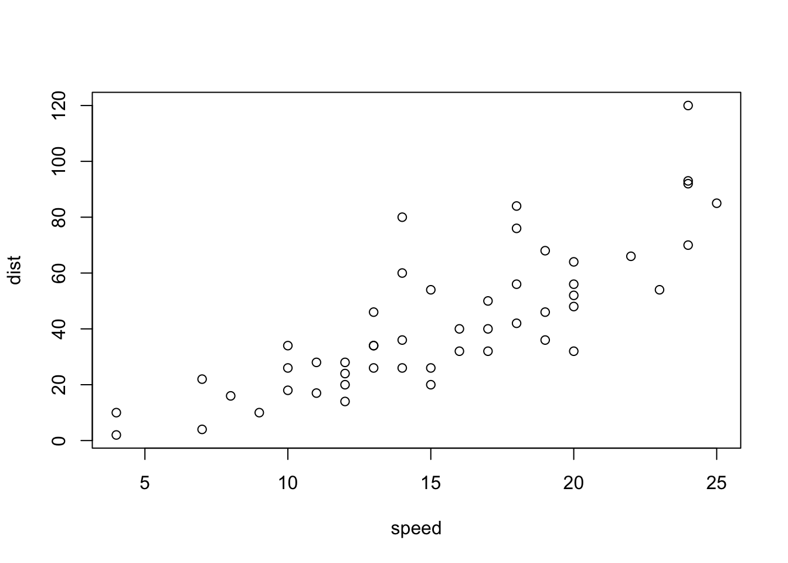

Reading time: 3 minute(s) @ 200 WPM.
I was until very recently involved in an epic struggle to get the system described in Making a Website Using Blogdown, Hugo, and GitHub pages to work for me. (See also Building a Blog with Blogdown and GitHub.) I really want it to work, because it has produced the current website that you are now reading, and I’m sure you’ll agree that it is very, very beautiful, in a stark, post-apocalyptic, Mordor-esque sort of way.
My problems all hinged on the fact that I misunderstood the static folder.
The conundrum was in trying to get external images, i.e., those that aren’t generated by R code chunks, to work. That is, to get external images into the R Markdown file, get them to show up in preview in the RStudio text editor [spoiler: they never do], and to continue to show up when uploaded to GitHub, to produce my website located at richardlent.github.io. [Don’t click, you’re already there.]
To make sense of the following you may need to refer to Hugo’s Directory Structure.
In a post created in this R blogdown-Hugo-static website-generated universe, images created by R graphics code work as follows.
Here is an R code chunk that generates an image.
```{r echo=FALSE, fig.align="center"}
plot(cars)
```
I can preview this post while writing it in the RStudio text editor, and the R-generated images show up nicely. They also appear nicely, as you can see above, when I upload the material rendered by the Hugo static website generator to GitHub, where you are now reading it.
To get this to happen, I don’t have to do anything other than write the R code. The code chunk that produces the image triggers blogdown and Hugo to create a folder for this post to contain the image file. The image folder for this post, stored in the static folder, is named 2017-05-02-getting-images-to-work_files, with a subfolder named figure-html that contains an image file named unnamed-chunk-1-1.png. The image is regarded as unnamed, I guess, because I have not given the image a name up in the code chunk.
This all works because anything put into Hugo’s static folder is copied up to GitHub unchanged. Where I screwed up was in not understanding what this actually means.
And so in the local directory structure of this website I have the following folder:
/static/img/
Following the advice of various pundits, I put images that I want to use in posts in the img subfolder. From there, we insert them into our R Markdown documents.
And thus we try this, with an image of my cat:

Willie
And it works, as you can see.
That is, now it’s working. It didn’t before.
Here’s why.
The Markdown tag used to insert this image is:

Instead of the above, I thought it should be this:

That is, I put in the static folder. That was wrong. Very wrong.
Because whilst the Hugo documentation states that “Everything in the static directory will be copied directly into the final site when rendered,” the static folder itself does NOT get copied to the final site. It’s the CONTENTS of the static folder that get copied to the final site, which is then uploaded to GitHub to yield the URL for this website, richardlent.github.io.
Elsewhere, Hugo hath spake:
“When Hugo builds your site, all assets INSIDE your static directory are copied over as-is.”
The emphasis above is mine and mine alone. That is, emphasis on the “inside.” What’s inside the static folder gets uploaded, not the static folder itself. Get it? No static folder. Nope. Just what’s inside of it. The contents. They get uploaded. Not the static folder.
So I’m glad we figured that out.
A final note. When external images are inserted into R Markdown files in the manner just described, they will not show up in the RStudio text editor as do R-generated graphics. You’ll instead get a little message saying something like No image at path /img/willie.png. However, when you use the blogdown RStudio addin Serve Site, the image will be correctly rendered in the RStudio Viewer pane (or in its own window if you have RStudio set up that way). When in Serve Site, you can edit the R Markdown document in the RStudio text editor, and the site preview will be automagically updated in real time. This is a groovy bit of technology called LiveReload.